Orders & Production Stages Dashboard
This dashboard shows where every workshop order sits on the production line, which stage is slowing work down, which orders have fallen behind their due date, and how much of the order value has not yet been collected.
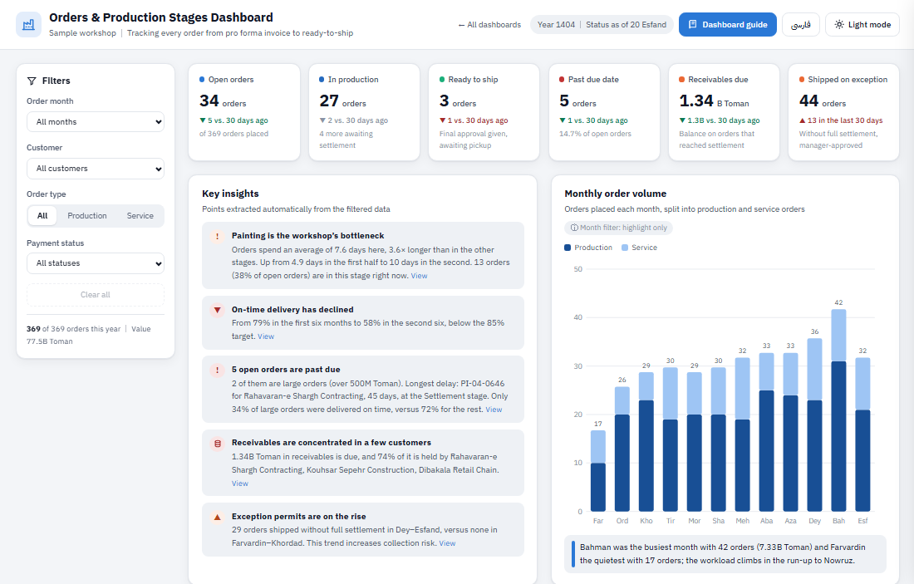
Every order starts with a pro forma invoice and passes through up to ten stages in sequence: laser cutting, bending, forging, welding, cleaning, painting, assembly, packaging, settlement and shipping. Service orders (for example, just cutting the customer’s own sheet metal) need only some of these stages. After settlement, or once an “exception permit” is issued, the order receives final approval as “Ready to ship”.
The data covers the Persian year 1404, and all statuses are calculated as of 20 Esfand 1404. In total, orders worth were placed.
Which stage is the bottleneck, and where is the work piling up?
Which orders are behind the date we promised the customer?
How much are we owed, by whom, and how many orders shipped without settlement?
Quick start
- Read the metrics and insights. The row of cards at the top describes today’s status, and the “Key insights” panel states the most important problems with numbers and names.
- Narrow the scope with filters. For example, select the customer “” so every chart shows only their orders.
- Click on orders. In the “Order list”, click any row to open that order’s full stage history in a side panel.
Hover over any bar, point or chart row to see its details in a small tooltip. On a phone, tap it instead.
Key metrics View in dashboard →
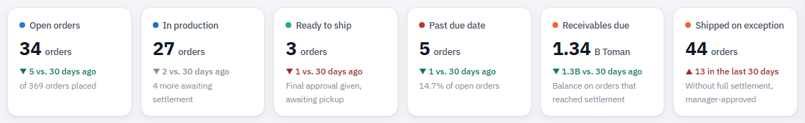
What does it show?
- Open orders: orders that have not shipped yet.
- In production: orders currently in one of the eight production stages (cutting through packaging).
- Ready to ship: orders with final approval that are only waiting for pickup.
- Past due date: open orders whose due date has passed.
- Receivables due: the outstanding balance on orders that have reached the settlement stage but have not been paid in full.
- Shipped on exception: the number of orders shipped without full settlement, with a manager’s approval.
How to read it
▲ means the number is higher than 30 days ago and ▼ means it is lower. Green means the change is good for the workshop and red means it needs follow-up; for example, a rise in “Ready to ship” is green, while a rise in “Past due date” is red. For “In production”, whether a change is good or bad is not clear-cut, so it is shown in grey.
Key insights View in dashboard →
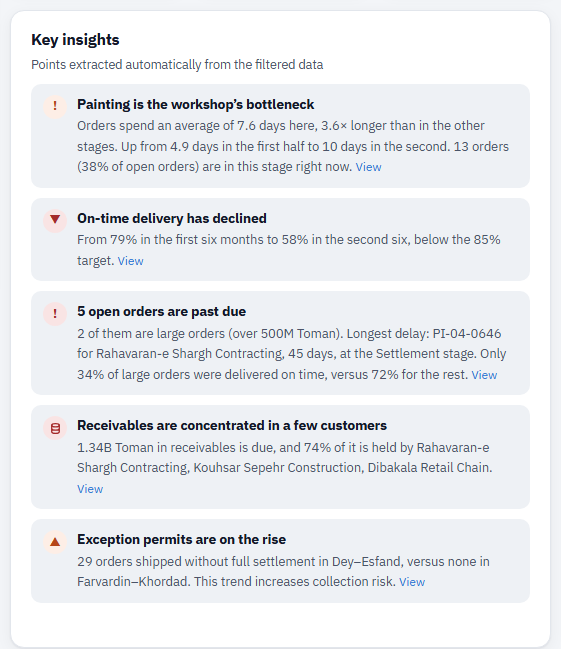
This panel reviews the charts for you and writes up to five key points in plain language. The color of each point’s icon shows its severity: red for a serious problem, orange for a warning and green for good news. The “View” link takes you to the related chart.
Monthly order volume View in dashboard →
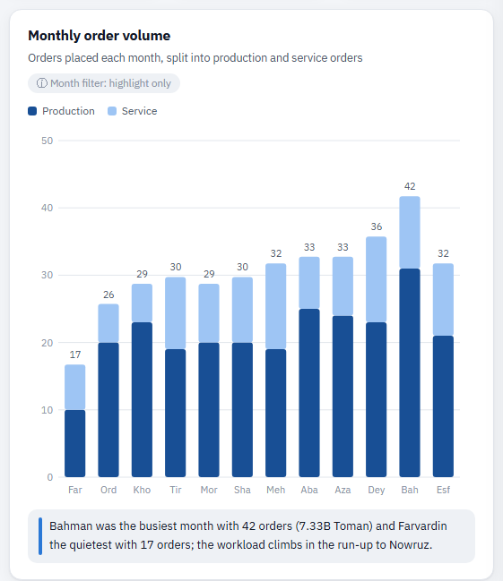
Each column is one month, and the months run from left to right (Farvardin on the left). The full height of a column is the number of orders placed that month, and the number above it shows the same count. If you select a month filter, the chart keeps the whole year and simply highlights the selected month, so the comparison is not lost.
Open orders by stage View in dashboard →
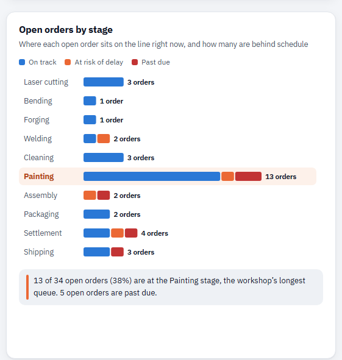
Each row is one of the ten stages, and the length of the bar is the number of open orders in that stage right now. The bar is split into three colors: blue for orders “on track”, orange for orders “at risk of delay” and red for orders “past due”. The row with the cream background is the bottleneck stage (based on the next chart).
Average days spent in each stage View in dashboard →
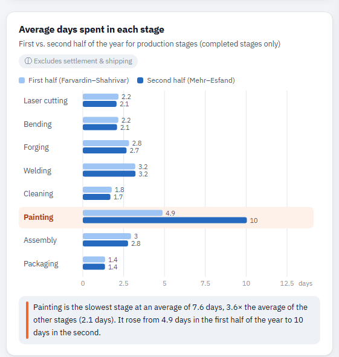
For each production stage, the chart shows the average number of days orders spent in it (from entry to exit). Each stage has two bars so you can see whether things got better or worse in the second half of the year. The stage with the highest average is labeled the “bottleneck”. Settlement and shipping are left out of this chart because their timing depends on customer payment and transport, not on workshop capacity.
On-time delivery trend View in dashboard →
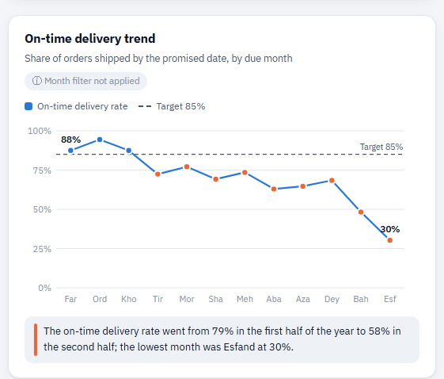
For each month, the chart takes the orders that were due that month and plots the percentage shipped by their due date. Months run from left to right. Because this chart is plotted by “due month” rather than “order month”, the month filter is not applied to it.
Lead time distribution View in dashboard →
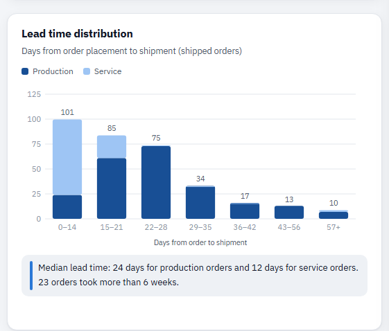
For shipped orders, the number of days between placing the order and shipping it is counted, and orders are grouped into time ranges. The dark part of each column is production orders and the light part is service orders. The further the columns stretch to the right, the longer customers have had to wait.
Payment status & exception permits View in dashboard →
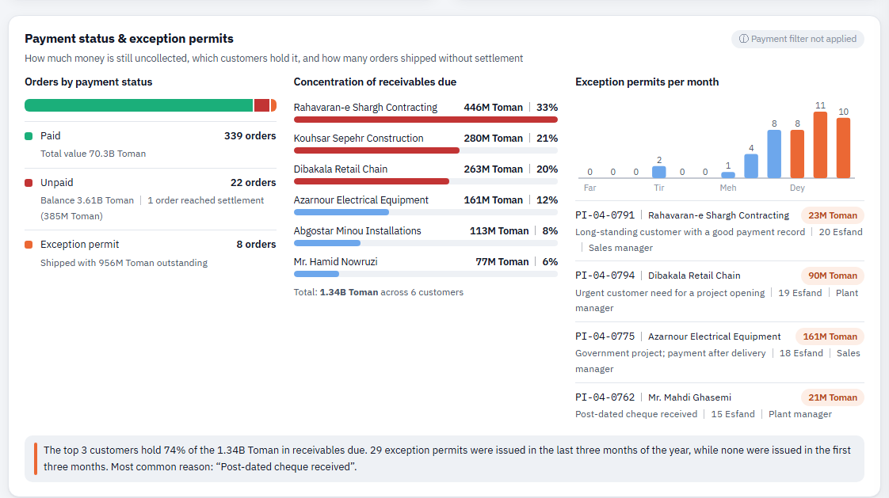
What does it show?
- Payment status: the colored bar shows the share of Paid, Unpaid and Exception permit orders, with the count and amount for each group listed below it.
- Concentration of receivables due: the customers with the largest amounts due, with the amount and share of each. The top three customers are shown in red.
- Exception permits: the number of permits issued each month (the last three months of the year in orange) and the latest permits with their reason, date and approver.
Of the in receivables due, is held by three customers, with the largest share held by at .
exception permits were issued in Dey–Esfand, compared with in Farvardin–Khordad. Most common reason: “”.
The “Payment status” filter is not applied to this section, so you always see the full payment picture; the monthly permits chart also always shows the whole year.
Order list and details panel View in dashboard →
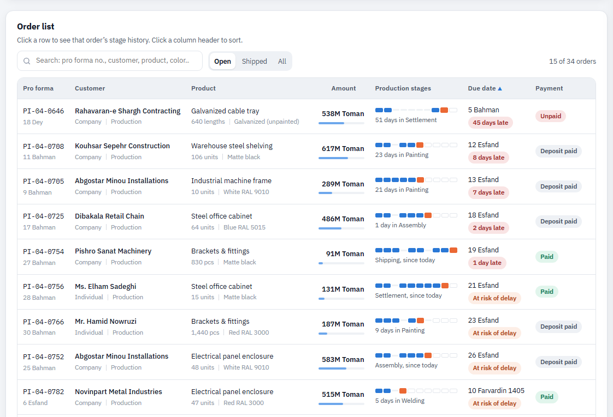
How to read it
Stage tracker: ten small boxes, in order from left (laser cutting) to right (shipping):
Blue = completed stage, orange = current stage, empty box = remaining stage, faint line = a stage this order does not need.- Due date: On track At risk of delay 8 days late Shipped on time
- Payment: Paid Deposit paid (not yet at settlement) Unpaid (reached settlement but payment has not arrived) Exception permit
Click any column header to sort the table (click again to reverse the order). The default order is “due-date urgency”: late orders first, then orders at risk. In the search box you can type a pro forma number, customer name, product, color or stage name. The “Open / Shipped / All” buttons set the table’s scope. On a phone, the table is shown as cards and sorting is done from the menu above it.
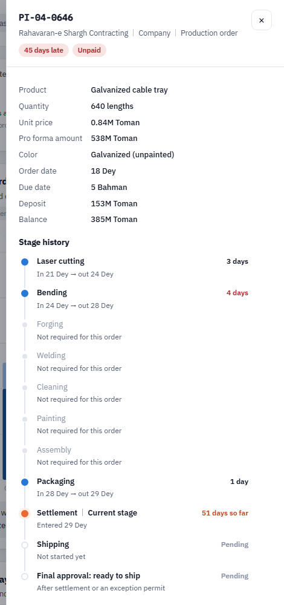
Filters View in dashboard →
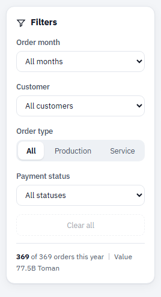
- Order month: only orders placed in that month.
- Customer: a specific customer, or all individual customers, or all company customers.
- Order type: production (manufacturing a complete product) or service (carrying out one or more stages on the customer’s own material).
- Payment status: paid, unpaid or exception permit.
The “Clear all” button removes every filter. Selected filters are saved in the page address, so you can send the link to a colleague and they will see exactly the same view.
| Dashboard section | Order month | Customer | Order type | Payment status |
|---|---|---|---|---|
| Key metrics | ✓ | ✓ | ✓ | ✓ |
| Key insights | ✓ | ✓ | ✓ | ✓ |
| Monthly order volume | Highlight only | ✓ | ✓ | ✓ |
| Open orders by stage | ✓ | ✓ | ✓ | ✓ |
| Days spent in each stage | ✓ | ✓ | ✓ | ✓ |
| On-time delivery trend | ✗ | ✓ | ✓ | ✓ |
| Lead time distribution | ✓ | ✓ | ✓ | ✓ |
| Payment status & receivables concentration | ✓ | ✓ | ✓ | ✗ |
| Monthly exception permits chart | ✗ | ✓ | ✓ | ✗ |
| Order list | ✓ | ✓ | ✓ | ✓ |
Frequently asked questions
What is the difference between “past due” and “at risk of delay”?
“Past due” means the due date has passed and the order has not shipped yet. “At risk of delay” means the due date has not arrived yet, but if the remaining stages proceed at their usual pace, the order will be ready after the due date. At-risk orders are the best opportunity to prevent delays.
How do “receivables due” differ from the total outstanding balance on orders?
Customers usually pay part of the amount when placing the order and the rest before shipment. A balance on orders still in production is normal and not yet due. “Receivables due” only counts the balance on orders that have reached the settlement stage or shipped on an exception permit, in other words, money that should already have been collected.
How is the “vs. 30 days ago” comparison calculated?
The same metric is recalculated for 30 days earlier (20 Bahman) with the same filters, and the difference between the two numbers is shown. For exception permits, the comparison figure is the number of permits issued in the last 30 days.
How is the bottleneck determined, and why isn’t settlement included?
Of the eight production stages, the one with the highest average number of days is called the bottleneck. Settlement time depends on customer payment and shipping time on transport, and neither gets shorter by adding staff or machines to the workshop, so they are analyzed separately in the payment section.
Why doesn’t the on-time delivery trend change with the month filter?
This chart is plotted by the due month, not the month the order was placed. If the order-month filter were applied, the year’s trend would fall apart and the months could no longer be compared.
Where does the dashboard’s data come from?
The data is read from the list of pro forma invoices, the entry and exit logs of each workstation, and the receipts ledger, and the dashboard updates automatically.
Glossary
- Pro forma invoice
- A document issued to the customer before work begins; its number (such as PI-04-0646) identifies the order throughout the dashboard.
- Production order
- Manufacturing a complete product, such as shelving, a door or an electrical panel enclosure, which usually passes through most of the stages.
- Service order
- Carrying out one or more stages on the customer’s own material, such as laser cutting sheet metal or powder coating parts.
- Current stage
- The stage an order is in on the report date.
- Bottleneck
- The slowest production stage, which sets the pace for the whole workshop.
- Due date
- The date promised to the customer when the order was placed.
- Settlement
- The stage in which the remaining balance is collected before shipment.
- Exception permit
- A manager’s approval to ship an order without full settlement, with the reason recorded.
- Ready to ship
- Final approval after settlement or an exception permit; the order is only waiting for pickup.
- Receivables due
- The outstanding balance on orders that have reached settlement or shipped on an exception permit.
- Lead time
- The number of days between placing an order and shipping it.
- Median
- The middle value when all values are sorted; unlike the average, a few very long orders do not push it up.